Rust · 核心原理图谱
系统级语言:所有权 + 借用检查编译期保证内存安全无 GC,trait 静态分发,零成本抽象。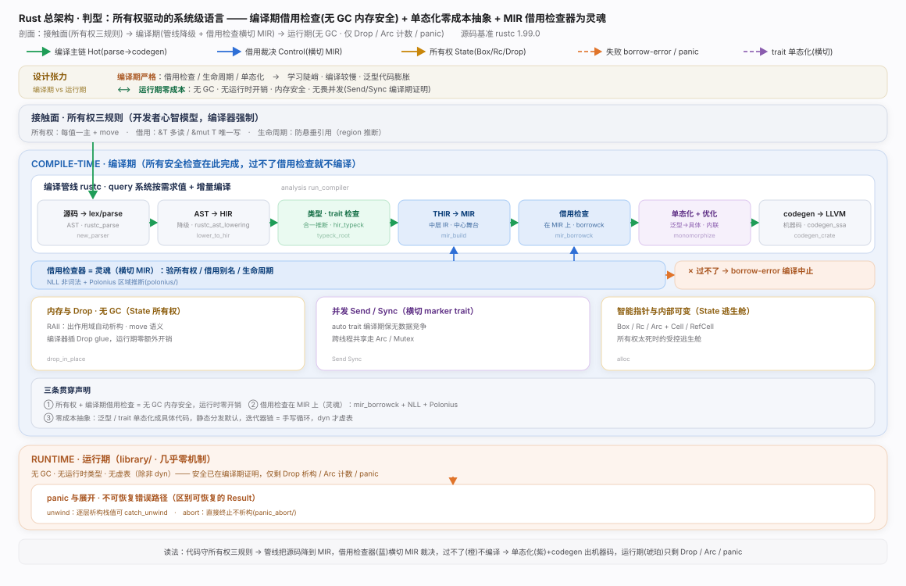
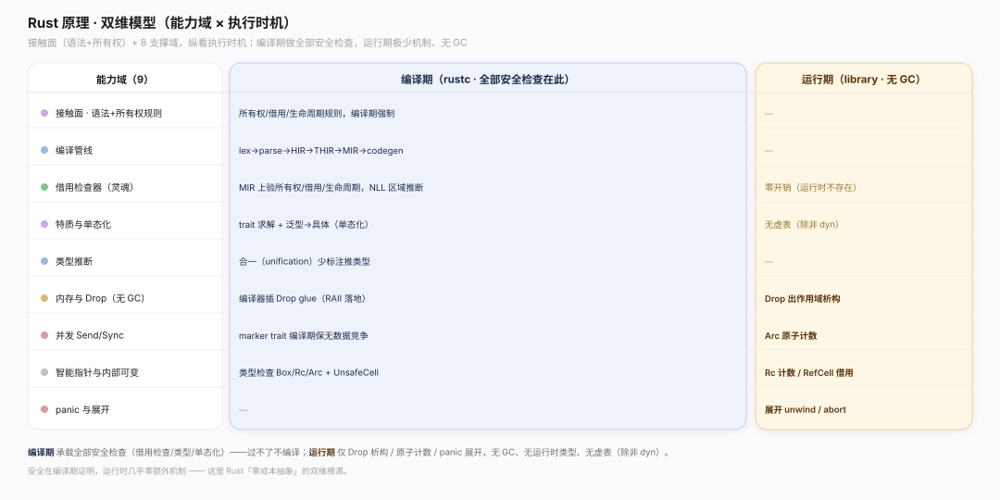
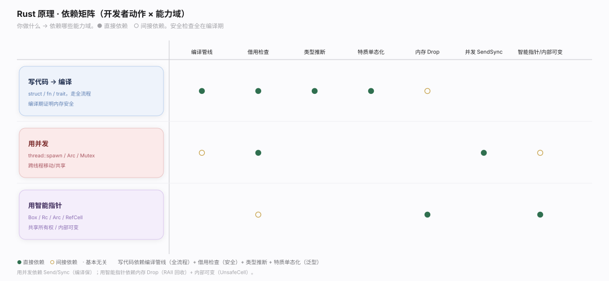
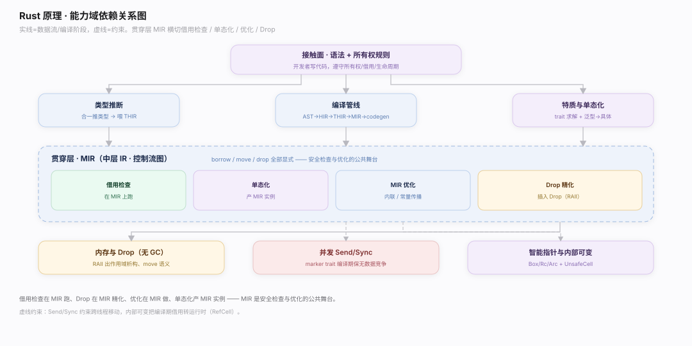
~/workdir/rust,git 38a05769;compiler/ + library/)。| 阶段 | crate/入口 | 源码锚点 |
|---|---|---|
| 词法 | rustc_parse lexer | compiler/rustc_parse/src/lexer/mod.rs:65 |
| AST→HIR | rustc_ast_lowering lower_to_hir | compiler/rustc_ast_lowering/src/lib.rs:655 |
| 类型检查/推断 | rustc_hir_typeck typeck_with_inspect | compiler/rustc_hir_typeck/src/lib.rs:111 |
| 检查驱动 | rustc_hir_analysis check_crate | compiler/rustc_hir_analysis/src/lib.rs:150 |
| THIR→MIR | rustc_mir_build build_mir_inner_impl | compiler/rustc_mir_build/src/builder/mod.rs:67 |
| 借用检查(灵魂) | rustc_borrowck mir_borrowck | compiler/rustc_borrowck/src/lib.rs:115 |
| 单态化/分区 | rustc_monomorphize collect_and_partition | compiler/rustc_monomorphize/src/partitioning.rs:1144 |
| MIR 优化 | rustc_mir_transform | compiler/rustc_mir_transform/src/lib.rs:537 |
| codegen 后端 | rustc_codegen_ssa CodegenBackend | compiler/rustc_codegen_ssa/src/traits/backend.rs:36 |
| 增量/查询 | rustc_middle dep_graph try_mark_green | compiler/rustc_middle/src/dep_graph/graph.rs:885 |
| 运行期·析构 | core Drop | library/core/src/ops/drop.rs:209 |
| 运行期·并发 | core Send/Sync | library/core/src/marker.rs:92 |
| 运行期·panic | std panic_handler | library/std/src/panicking.rs:612 |
| 层 | 主线 | 一句话职责 |
|---|---|---|
| 接触面 | 语法与所有权规则 | 开发者写的代码 + 所有权/借用/生命周期规则 |
| 编译 | 编译管线 | AST→HIR→THIR→MIR→LLVM + query/增量 |
| 灵魂 | 借用检查器 | MIR 上验所有权/借用/生命周期(NLL/Polonius) |
| 泛型 | 特质与单态化 | trait 求解 + 泛型→具体(zero-cost) |
| 类型 | 类型推断 | 合一(unification)推类型 |
| 内存 | 内存与 Drop | 无 GC:RAII/Drop 析构、move 语义 |
| 并发 | Send/Sync | marker trait 编译期保无数据竞争 |
| 抽象 | 智能指针与内部可变 | Box/Rc/Arc + UnsafeCell/Cell/RefCell |
| # | 声明 | 要点 |
|---|---|---|
| 1 | 所有权 + 编译期检查 = 无 GC 内存安全 | 每值唯一 owner,move 转移,借用有规矩,生命周期防悬垂——借用检查器编译期证明,运行时无 GC/无引用计数(除非显式 Rc/Arc) |
| 2 | 借用检查在 MIR 上(灵魂) | 非运行时检查,而是 MIR 上 rustc_borrowck 用区域推断(NLL,Polonius 更精确)证明;过不了不编译 |
| 3 | 零成本抽象 | 泛型/trait 靠单态化编成具体代码,静态分发无虚表(除非 dyn);迭代器链 = 手写循环。"不用的不花钱,用的没法手写更快" |
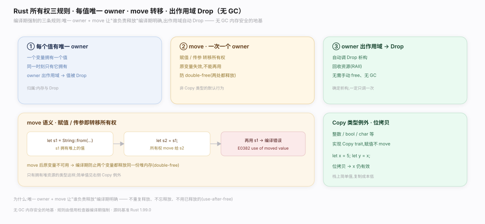
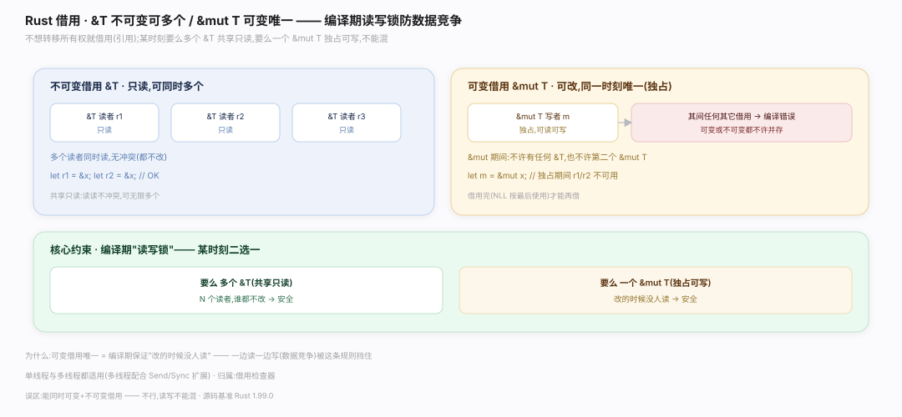
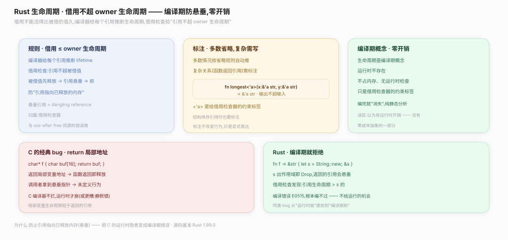
library/core/、语言规则)。&T/&mut T 就不 clone/move,减拷贝;需所有权才 move。.clone 复制拿所有权——有拷贝开销,权衡用。<'a>。Rc<RefCell<T>>(Rc library/alloc/src/rc.rs:320、RefCell library/core/src/cell.rs:849)、多线程 Arc<Mutex<T>>(Arc library/alloc/src/sync.rs:269、Mutex library/std/src/sync/poison/mutex.rs:227,加锁 lock :490)——绕过"可变唯一"的编译期检查,转运行时。| 概念 | 说明 | 源码锚点 |
|---|---|---|
| 所有权 owner | 每值唯一 owner,出作用域 Drop | rustc_borrowck/src/lib.rs:115(mir_borrowck 强制) |
| move | 赋值/传参转移所有权,原变量失效 | rustc_borrowck/src/lib.rs:115 |
| Copy trait | 位拷贝类型(整数等)不 move | library/core/src/marker.rs:454 |
&T / &mut T | 不可变借用(多)/ 可变借用(唯一) | rustc_borrowck/src/region_infer/mod.rs:483 |
生命周期 <'a> | 借用不超 owner 生命周期(编译期) | rustc_hir_analysis/src/collect/resolve_bound_vars.rs:66 |
| Drop trait | 出作用域自动析构(RAII) | library/core/src/ops/drop.rs:209 |
| Send/Sync | 借用扩到多线程的 marker | library/core/src/marker.rs:92 |
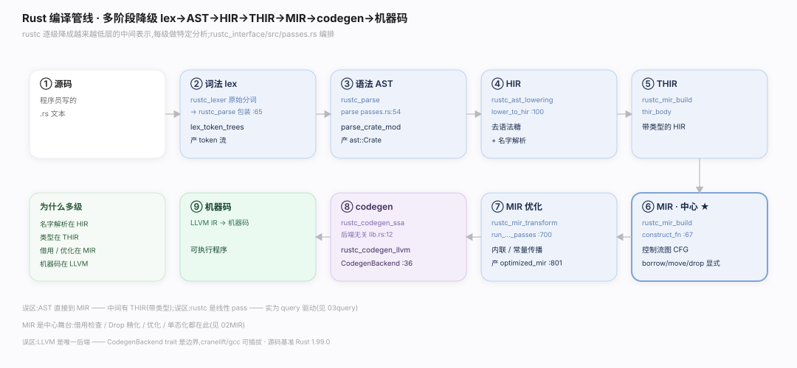
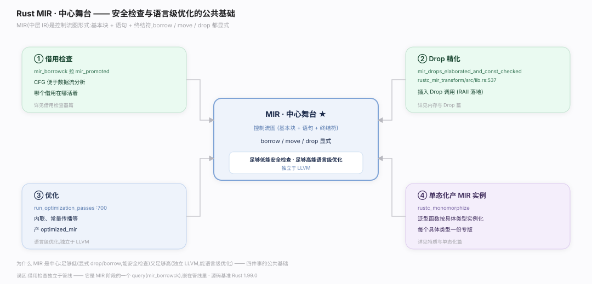
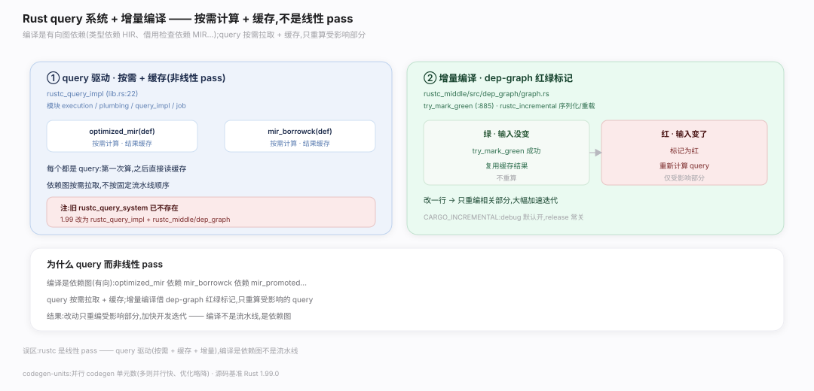
compiler/rustc_*)。CARGO_INCREMENTAL(默认 debug 开)——改动只重编受影响部分,加快迭代;release 常关(求峰值优化)。| 阶段/结构 | 入口 | 源码锚点 |
|---|---|---|
| 管线编排 | passes.rs | rustc_interface/src/passes.rs:54 |
| lex 分词 | rustc_parse lexer | lexer/mod.rs:65 |
| AST→HIR | rustc_ast_lowering | rustc_ast_lowering/src/lib.rs:1 |
| HIR→THIR→MIR | rustc_mir_build construct_fn | builder/mod.rs:67 |
| MIR 优化 | run_optimization_passes | lib.rs:700 |
| optimized_mir query | rustc_mir_transform | rustc_mir_transform/src/lib.rs:801 |
| Drop 精化 | mir_drops_elaborated | rustc_mir_transform/src/lib.rs:537 |
| codegen 后端无关层 | rustc_codegen_ssa | lib.rs:12 |
| codegen 后端边界 | CodegenBackend trait | rustc_codegen_ssa/src/traits/backend.rs:36 |
| query 实现 | rustc_query_impl | lib.rs:22 |
| 增量红绿标记 | dep_graph try_mark_green | rustc_middle/src/dep_graph/graph.rs:885 |
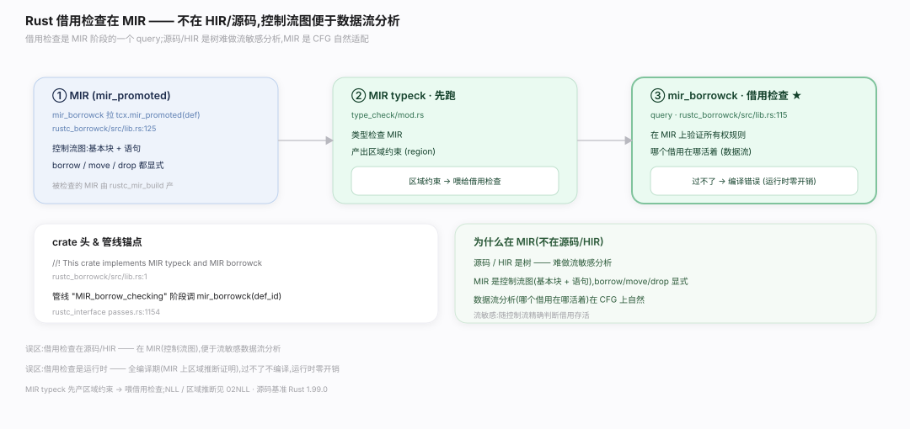
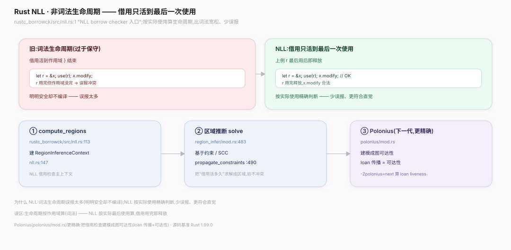
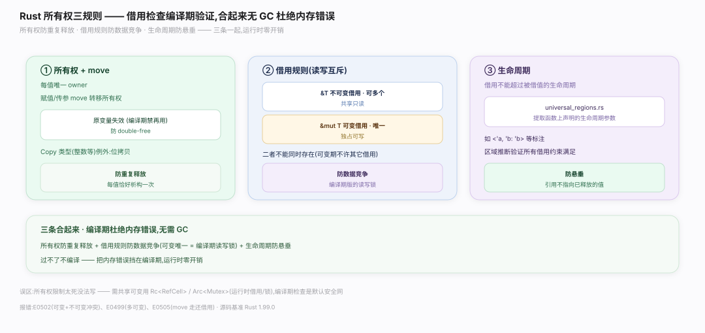
compiler/rustc_borrowck/)。<'a> 标注帮编译器。| 结构 | 定义 | 职责 |
|---|---|---|
| crate 定位 | rustc_borrowck/src/lib.rs:1 | 实现 MIR typeck + MIR borrowck |
| mir_borrowck | rustc_borrowck/src/lib.rs:115 | 借用检查 query(MIR 上) |
| 管线调用点 | rustc_interface/src/passes.rs:1144 | MIR_borrow_checking 阶段 |
| NLL 入口 | rustc_borrowck/src/nll.rs:1 | compute_regions 非词法生命周期 |
| BorrowSet | rustc_borrowck/src/borrow_set.rs:21 | 收集 MIR 里所有借用点 |
| Borrows 数据流 | rustc_borrowck/src/dataflow.rs:174 | 借用活跃性分析判冲突 |
| RegionInferenceContext | region_infer/mod.rs:80 | 区域推断上下文结构 |
| RegionInferenceContext.solve | region_infer/mod.rs:483 | 求解约束(SCC) |
| propagate_constraints | region_infer/mod.rs:546 | 传播区域约束 |
| MIR typeck | type_check/mod.rs:1 | 类型检查 MIR 产区域约束 |
| universal_regions | universal_regions.rs:1 | 提取函数生命周期参数 |
| Polonius | rustc_borrowck/src/polonius/mod.rs:38 | 下一代(图可达性 loan) |
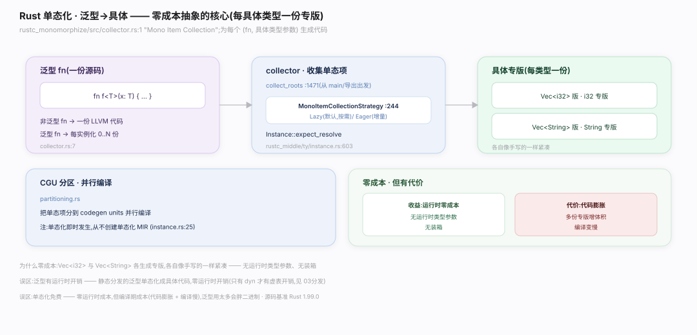
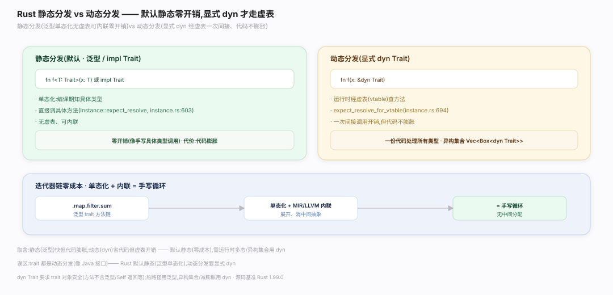
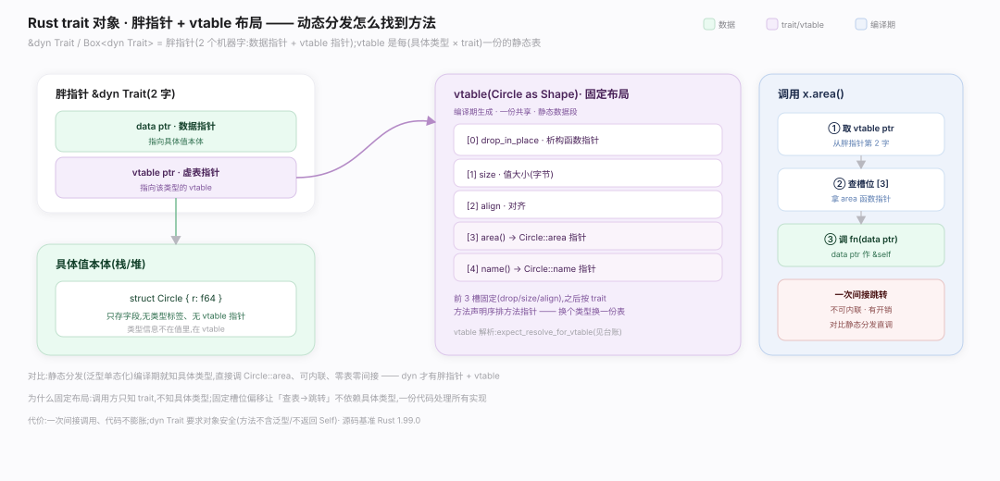
compiler/rustc_trait_selection/、rustc_monomorphize/)。dyn。Vec<T> 用了很多 T)增二进制体积 + 编译时间;必要时用 dyn 收敛。dyn Trait 要求 trait "对象安全"(方法不含泛型/Self 返回等)。#[inline] 让跨 crate 也能内联,零成本抽象跨模块生效。dyn。| 结构 | 定义 | 职责 |
|---|---|---|
| rustc_trait_selection | rustc_trait_selection/src/lib.rs:1 | trait 求解 |
| SelectionContext | rustc_trait_selection/src/traits/select/mod.rs:102 | 老 solver 选择 impl |
| SelectionContext::select | rustc_trait_selection/src/traits/select/mod.rs:289 | 选匹配 impl 候选 |
| ObligationCtxt | rustc_trait_selection/src/traits/engine.rs:50 | 义务收集/求解 |
| FulfillmentContext | rustc_trait_selection/src/traits/fulfill.rs:60 | 义务履行上下文 |
| coherence InCrate | rustc_next_trait_solver/src/coherence.rs:14 | 一致性判定 |
| coherence orphan | rustc_next_trait_solver/src/coherence.rs:221 | 一致性/orphan 规则 |
| Mono collector | rustc_monomorphize/src/collector.rs:1 | 收集单态项 |
| 收集策略 | collector.rs:244 | Eager/Lazy 策略 |
| crate 单态项入口 | rustc_monomorphize/src/collector.rs:1821 | collect_crate_mono_items |
| collect_and_partition | rustc_monomorphize/src/partitioning.rs:1144 | 单态项分区到 CGU |
| partition | rustc_monomorphize/src/partitioning.rs:143 | 分配单态项到 CGU |
| Instance::expect_resolve | rustc_middle/src/ty/instance.rs:603 | 解析具体实例 |
| vtable resolve | rustc_middle/src/ty/instance.rs:694 | dyn 动态分发虚表 |
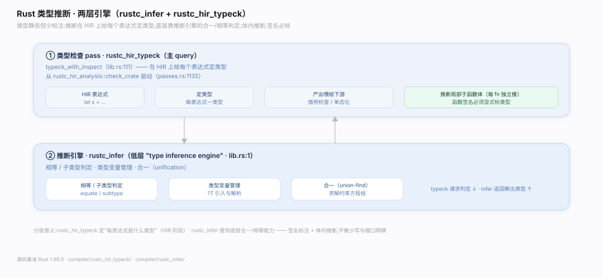
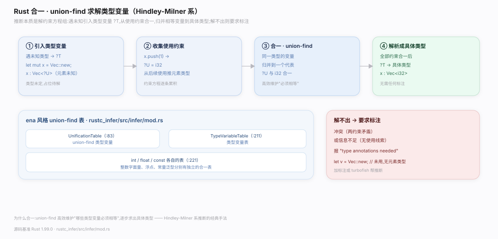
let x = vec![]; x.push(1) 推出 Vec<i32> 无需标注。产出的类型喂给借用检查/单态化。源码基准 Rust 1.99.0(compiler/rustc_hir_typeck/、rustc_infer/)。let x = ...);签名/复杂泛型需标注帮推断。collect::<Vec<_>> 显式指定类型参数帮推断。let v = Vec::new 后没用,无元素类型线索)——加标注是正常。| 结构 | 定义 | 职责 |
|---|---|---|
| rustc_infer | rustc_infer/src/lib.rs:1 | 推断引擎(合一/相等) |
| check_crate 驱动 | rustc_hir_analysis/src/lib.rs:150 | 类型检查阶段入口 |
| typeck_root | rustc_hir_typeck/src/lib.rs:87 | 每 body 类型检查根 |
| typeck_with_inspect | rustc_hir_typeck/src/lib.rs:111 | 类型检查主 query |
| FnCtxt | rustc_hir_typeck/src/fn_ctxt/mod.rs:45 | 单个函数体的推断上下文 |
| check_expr_with_expectation | rustc_hir_typeck/src/expr.rs:207 | 带期望类型的表达式检查 |
| coerce 强制转换 | rustc_hir_typeck/src/coercion.rs:242 | 隐式类型转换 |
| demand_coerce | rustc_hir_typeck/src/demand.rs:230 | 类型不合时触发转换 |
| InferCtxt | rustc_infer/src/infer/mod.rs:243 | 推断上下文(持类型变量表) |
| UnificationTable | rustc_infer/src/infer/mod.rs:82 | union-find 类型变量 |
| TypeVariableTable | rustc_infer/src/infer/type_variable.rs:88 | 类型变量表 |
| eq / sub 合一 | rustc_infer/src/infer/at.rs:198 / at.rs:165 | 相等/子类型合一 |
| next_ty_var | rustc_infer/src/infer/mod.rs:884 | 创建新类型变量 ?T |
| resolve_vars_if_possible | rustc_infer/src/infer/mod.rs:1335 | 求解类型变量为具体类型 |
| 快照回溯 | rustc_infer/src/infer/snapshot/mod.rs:61 | rollback_to 回溯推断 |
| lexical_region_resolve | rustc_infer/src/infer/lexical_region_resolve/ | 词法区域解析 |
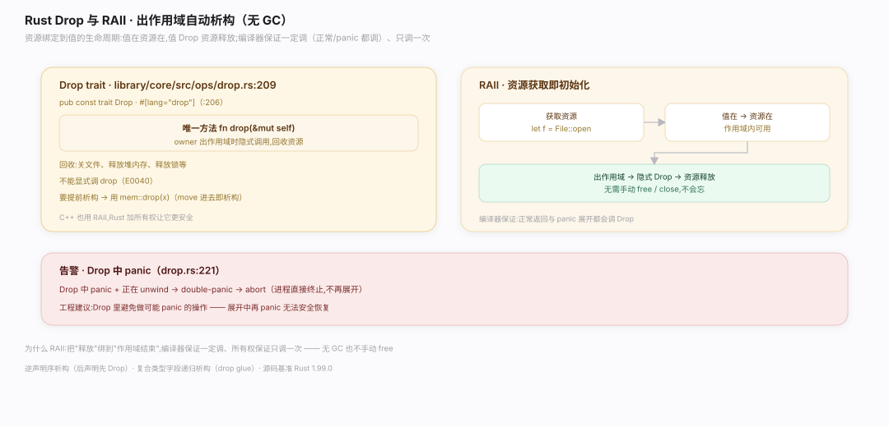
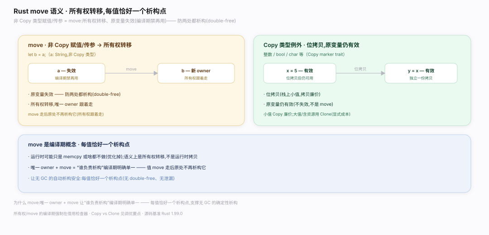
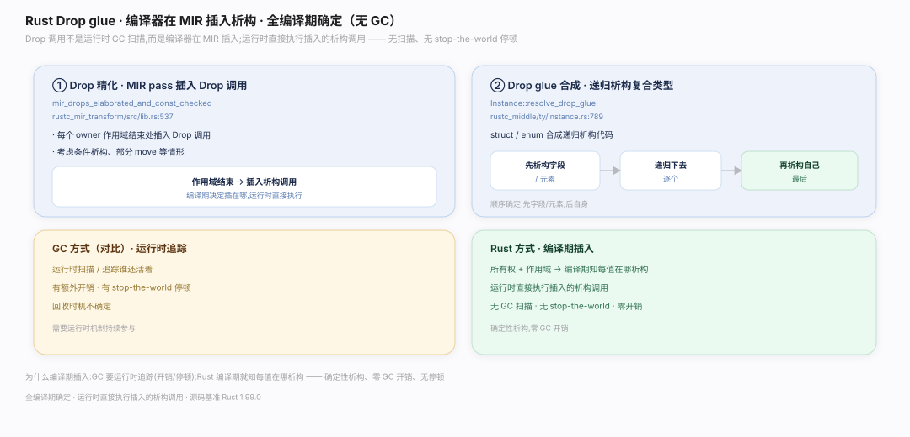
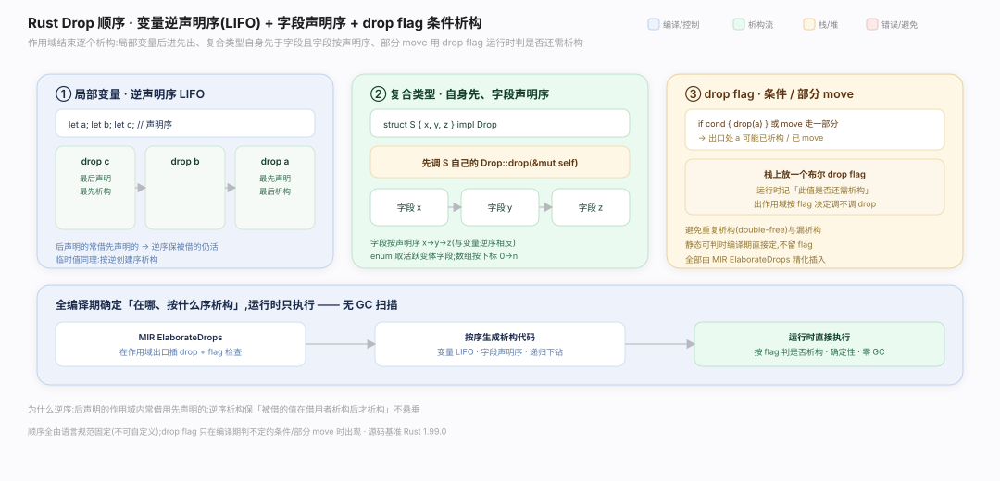
library/core/src/ops/drop.rs、rustc_mir_transform/)。drop(x) 显式提前析构(释放锁/资源),不用等作用域结束。| 结构 | 定义 | 职责 |
|---|---|---|
| Drop trait | library/core/src/ops/drop.rs:209 | drop(&mut self) 析构 |
| double-panic abort | library/core/src/ops/drop.rs:221 | Drop 中 panic + unwind → abort |
| mem::drop | library/core/src/mem/mod.rs:1039 | 提前析构(move 进去) |
| drop_in_place | library/core/src/ptr/mod.rs:811 | 原地析构单值 |
| needs_drop | library/core/src/mem/mod.rs:700 | 编译期判是否需析构 |
| ElaborateDrops | rustc_mir_transform/src/elaborate_drops.rs:48 | MIR Drop 精化 pass |
| Drop 精化 pass | rustc_mir_transform/src/lib.rs:537 | MIR 插入 Drop 调用 |
| resolve_drop_glue | rustc_middle/ty/instance.rs:789 | 合成递归析构代码 |
| check_drop_impl | rustc_hir_analysis/src/check/always_applicable.rs:38 | dropck 校验 Drop impl |
| dropck_outlives | rustc_traits/src/dropck_outlives.rs:21 | 保析构时被借数据仍活 |
| Copy trait | library/core/src/marker.rs:454 | 位拷贝类型(不 move) |
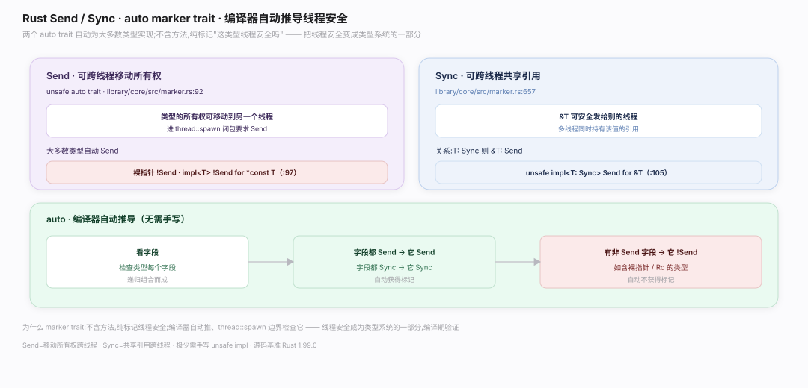
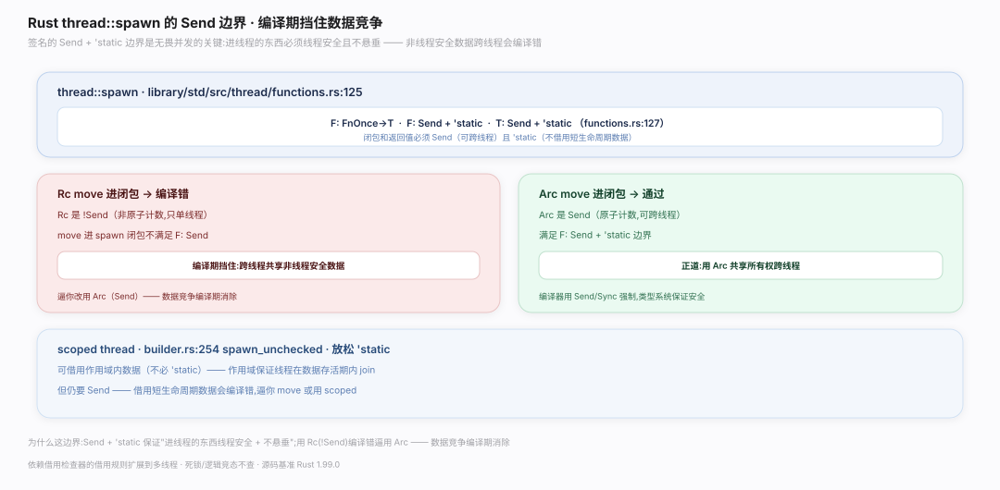
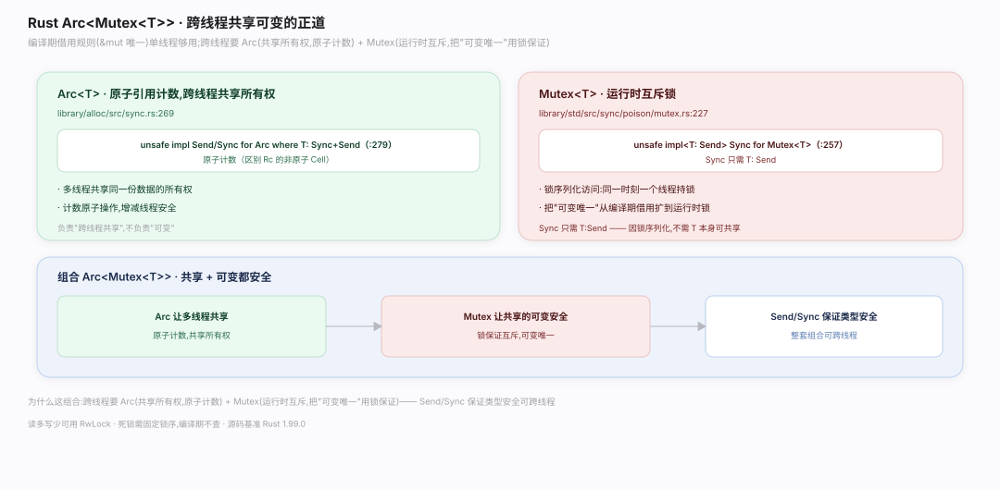
library/core/src/marker.rs、library/std/src/)。| 结构 | 定义 | 职责 |
|---|---|---|
| Send auto trait | library/core/src/marker.rs:92 | 可跨线程移动所有权 |
| Sync auto trait | library/core/src/marker.rs:657 | 可跨线程共享引用 |
| thread::spawn | library/std/src/thread/functions.rs:125 | F/T: Send + 'static 边界 |
| spawn 边界约束 | library/std/src/thread/functions.rs:127 | F: Send + 'static / T: Send |
| scoped spawn_unchecked | library/std/src/thread/builder.rs:254 | 放松 'static(借用作用域数据) |
| Arc<T> | library/alloc/src/sync.rs:269 | 原子引用计数(跨线程共享) |
| Mutex<T> | library/std/src/sync/poison/mutex.rs:227 | 运行时互斥(T: Send 即 Sync) |
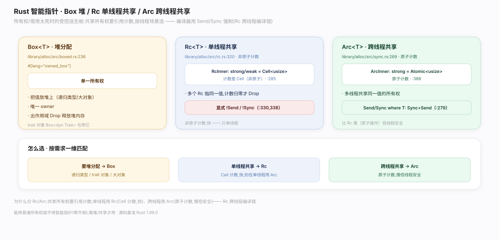
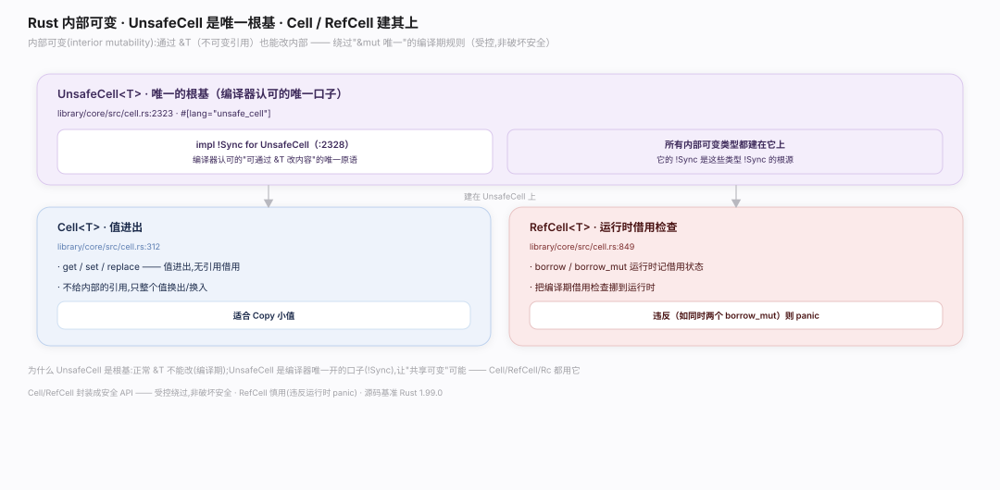
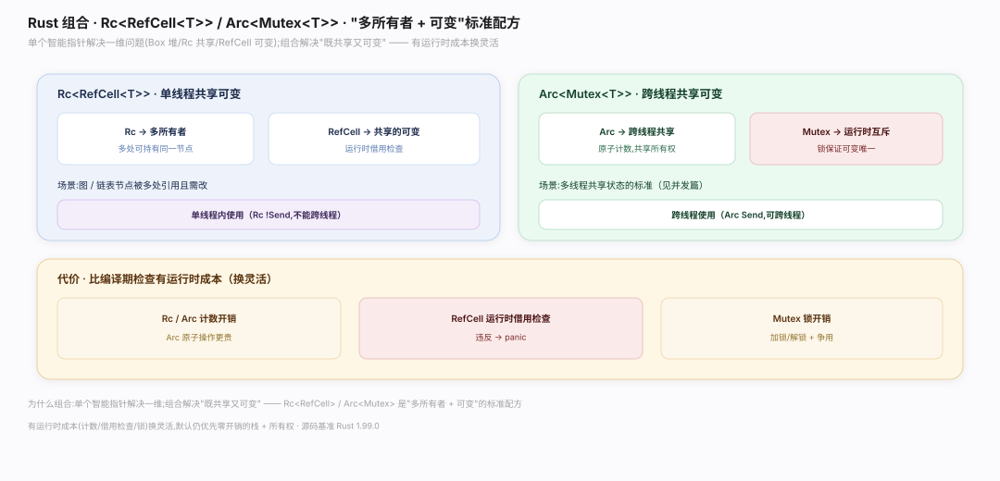
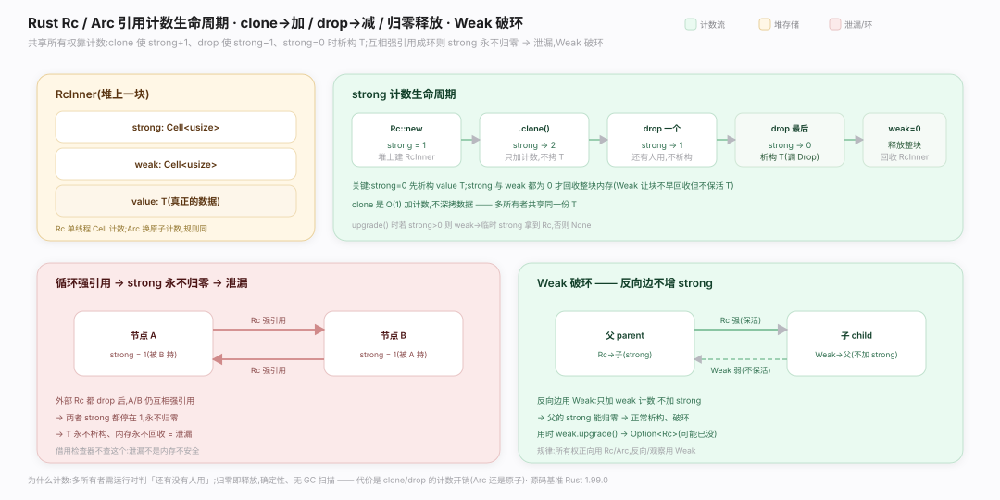
library/alloc/、library/core/src/cell.rs)。Box<dyn Trait>)、大对象上堆。| 结构 | 定义 | 职责 |
|---|---|---|
| Box<T> | library/alloc/src/boxed.rs:236 | 堆分配单一所有权 |
| Rc<T> | library/alloc/src/rc.rs:320 | 单线程共享(Cell 计数,!Send) |
| Arc<T> | library/alloc/src/sync.rs:269 | 跨线程共享(原子计数) |
| cell 模块 | library/core/src/cell.rs:1 | Shareable mutable containers |
| UnsafeCell<T> | library/core/src/cell.rs:2323 | 内部可变根基(!Sync) |
| Cell<T> | library/core/src/cell.rs:312 | 值进出(Copy 小值) |
| RefCell<T> | library/core/src/cell.rs:849 | 运行时借用检查(违反 panic) |
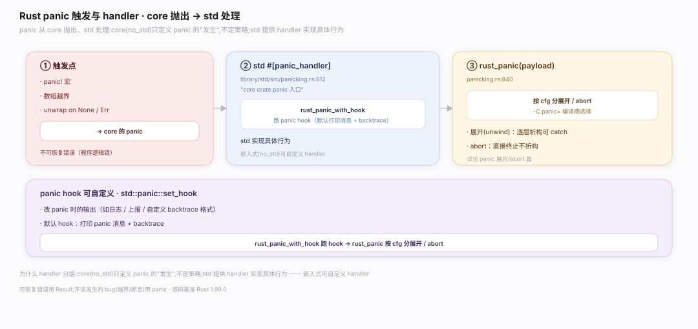
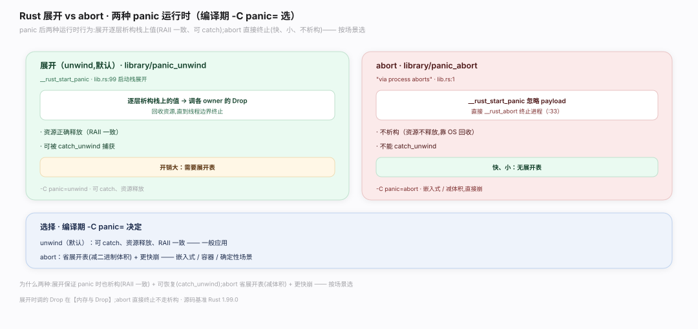
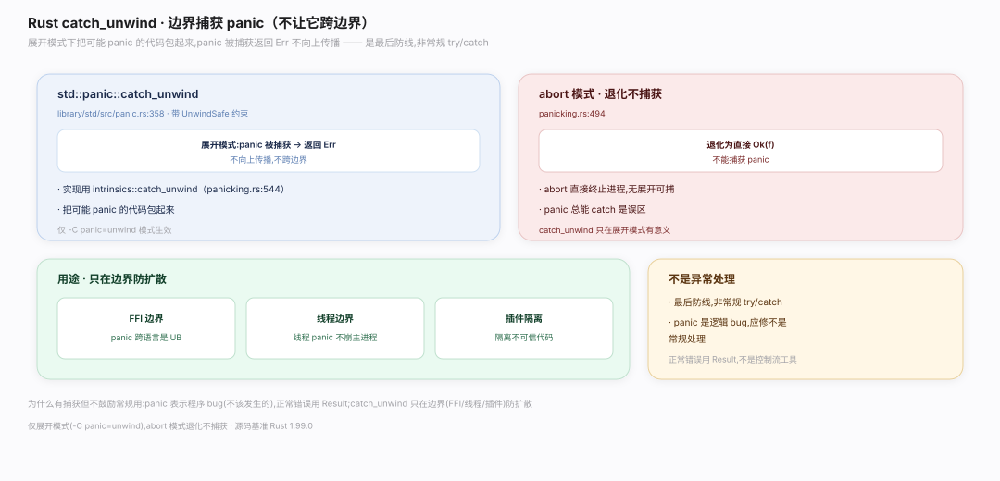
library/std/src/panicking.rs、library/panic_unwind/、library/panic_abort/)。set_hook 自定义 panic 输出(日志/上报/backtrace)。| 结构 | 定义 | 职责 |
|---|---|---|
| panic_handler | library/std/src/panicking.rs:612 | core panic 入口(std 实现) |
| begin_panic | library/std/src/panicking.rs:710 | panic! 无格式串路径 |
| panic_with_hook | library/std/src/panicking.rs:777 | 跑 panic hook 后转 rust_panic |
| set_hook | library/std/src/panicking.rs:142 | 自定义 panic 输出 hook |
| rust_panic | library/std/src/panicking.rs:886 | 触发展开/abort |
| catch_unwind(std::panic) | library/std/src/panic.rs:358 | 边界捕获 panic(UnwindSafe) |
| catch_unwind 实现 | library/std/src/panicking.rs:495 | do_call/do_catch 接 payload |
| panic_unwind | library/panic_unwind/src/lib.rs:99 | 展开运行时(逐层析构) |
| panic_abort crate | library/panic_abort/src/lib.rs:1 | abort 运行时 crate(via aborts) |
| panic_abort 终止 | library/panic_abort/src/lib.rs:33 | __rust_abort 直接终止 |